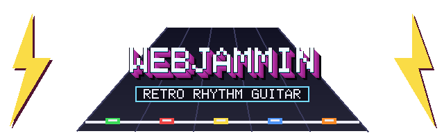
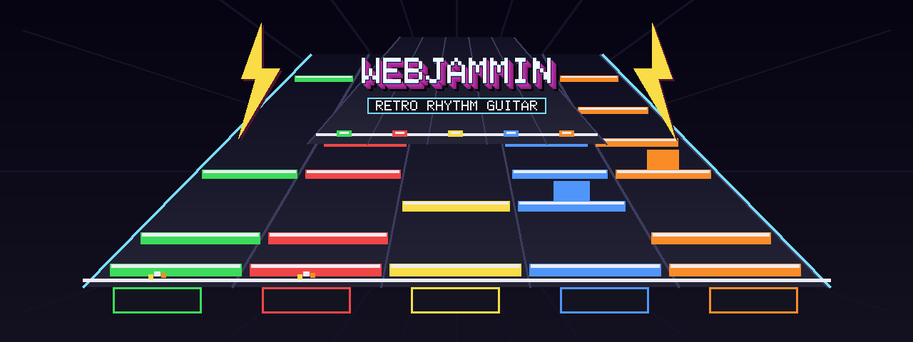
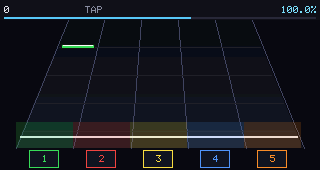
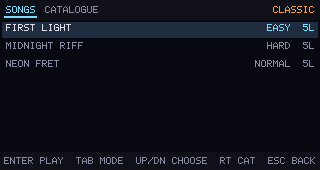
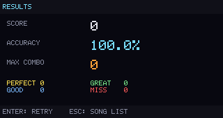
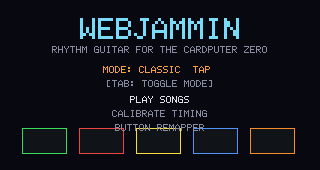
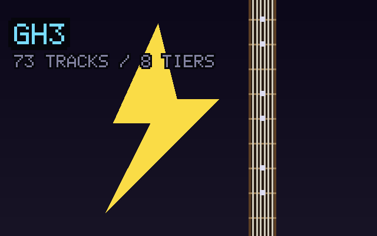
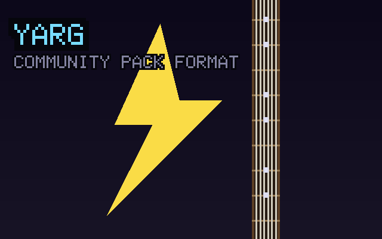
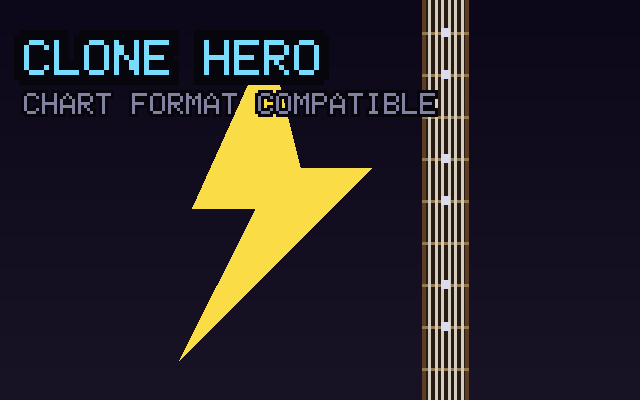
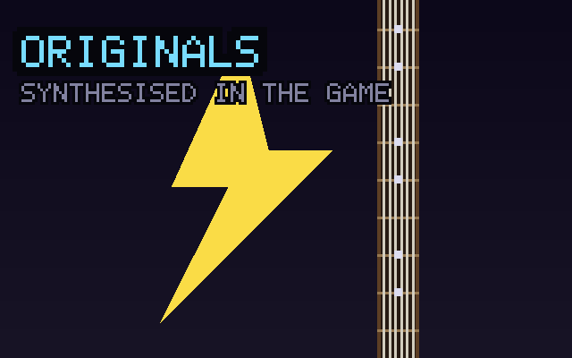

Judgement that feels fair
PERFECT ±25 ms, GREAT ±55 ms, GOOD ±90 ms. Combo, 1×–4× multiplier, live accuracy and a Rock/Jam meter for the health bar.
- Tap, HOPO and strum rules
- 4-lane and 5-lane charts
- Adjustable scroll speed

v0.1.0 Get the codeM5Stack Cardputer Zero · Debian arm64 · 320 × 170
The Cardputer Zero's 4 5 6 7 8 keys sit directly under its 1.9-inch panel. WeBjammin turns them into five frets, drops a highway down the screen, and plays the song the chart tells it to — so the note you hear and the note you press are the same event.

01 — The game
Notes fall down the highway. Strike the matching fret on the beat, hold sustains, throw in the strum. Miss too much and the Jam meter empties.
PERFECT ±25 ms, GREAT ±55 ms, GOOD ±90 ms. Combo, 1×–4× multiplier, live accuracy and a Rock/Jam meter for the health bar.
Clone Hero .chart, Standard MIDI .mid,
StepMania .sng, our own .wj.json, or a
streamed WAV. Charts and audio are pulled from a catalogue you point
the game at.
The 46-key keypad works out of the box. Build a button box on the extension header, plug in a USB guitar, or pair a Bluetooth one — all four land in the same input manager.




02 — How to play
Run the Debian image, apt install build-essential libasound2-dev,
copy the repo to the device and make. The Zero compiles it
itself — no cross-toolchain.
Edit ~/.config/webjammin/config.json: timing windows,
scroll speed, the audio device and the GPIO pin map. Remap buttons in
the game and it writes the file for you.
Title → Calibration: tap along with the click eight times. The median error becomes the offset that keeps the highway and the codec in agreement.
Song browser → Catalogue tab → ENTER. The chart (and the audio, if the catalogue offers it) lands in your song folder and is playable immediately.
| 1–5 | Frets 1–5 (the keys under the panel) |
| Space | Strum / open notes |
| FXZC | Up · Down · Left · Right |
| Enter | Confirm |
| Esc | Back / quit to the song list |
| Tab | Toggle Play Mode (Classic Tap vs Shredder Strum) / Pause |
The 14-pin EXT header on top of the chassis carries five free GPIOs. Wire them active-low to GND and map them in the config — no recompile.
| Pin 5 | GPIO22 → fret 1 |
| Pin 7 | GPIO11 → fret 2 |
| Pin 9 | GPIO10 → fret 3 |
| Pin 11 | GPIO9 → fret 4 |
| Pin 13 | GPIO7 → fret 5 |
| Pin 12 | GPIO15 → strum |
Pins 8 and 10 are the onboard I²C bus — leave them alone. Pins 12 and 14 are the UART console.
03 — Song packs
The catalogue client reads a small JSON index from a website, lists the songs in the game's own browser and downloads them one at a time. The packs below are the formats it understands.

73 songs across eight tiers, three boss battles and the bonus store — the pack that defined the genre.
.chart · .sng
Community chart packs in the Clone Hero dialect, with per-part difficulty that WeBjammin reads straight out of the file.
.chart
The format reference: .chart text, tempo
maps, sustains, chords and HOPO notes.

Songs composed for WeBjammin and rendered by its own FM engine — no licensing, no downloads, perfect sync by construction.
.wj.jsonMetadata only, from the public track listing. WeBjammin ships no copyrighted audio or charts; the list is here so you know what to look for in a catalogue you have the rights to use.
No track matches that.
04 — Roadmap
The engine is done; the game around it is still being built. This is the order we are taking it in, and what each stage unlocks.
Chart readers for four formats, the audio-locked scheduler, judgement and scoring, the four input backends, the song browser, the catalogue client, calibration and the in-game remapper.
Play the gig, not just the song. A campaign across venues — the dive, the club, the arena — with setlists, unlocks and encores, exactly the structure that made Guitar Hero III a genre.
Music games live on the people you play against. WeBjammin's plan is local-first, because the Zero cannot always reach the internet.
05 — Build it
# Debian 13 (trixie) arm64
sudo apt install -y build-essential libasound2-dev curl unzip
git clone <repo> webjammin && cd webjammin
make
make test
./build/webjammin --generate-songs ~/webjammin/songs
./build/webjamminmake # build/webjammin
make test # 22 unit tests
make songs # regenerate the bundled songs
./build/webjammin --selftest
./build/webjammin --render gameplay frame.ppm
./build/webjammin --fetch-catalogue https://host/catalogue.json
./build/webjammin --download-catalogue \
https://host/catalogue.json 0 ~/webjammin/songsThe device has no SDL2, and a DRM backend would fight the APPLaunch
launcher for /dev/fb0. We write the panel ourselves — one
pwrite of 108 800 bytes — and talk to ALSA directly so the
exact playback position can drive note timing.
The kernel already exposes /sys/class/gpio. Using it means
the device needs no extra package, and the pin map can be remapped from
the config file at runtime.
Song position comes from the sound card, not from
CLOCK_MONOTONIC. Frames played minus frames buffered is
the only position that cannot drift over a four-minute song.